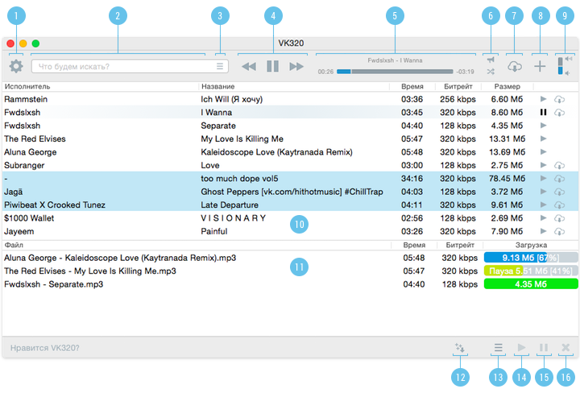
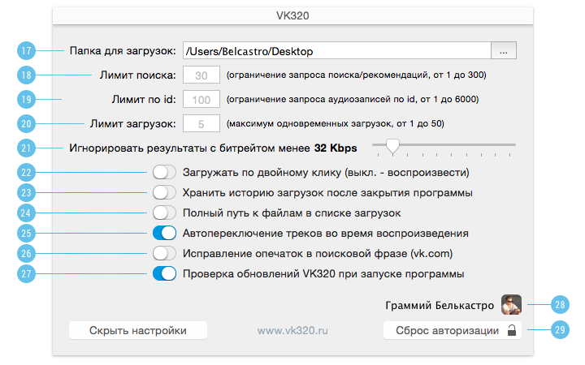

Как это работает?
При первом запуске приложение запросит права доступа к аудиозаписям в ВК, если Вы уже авторизированы через браузер Safari. Если нет, потребуется авторизация в ВК. После успешной авторизации введите поисковой запрос в строку поиска (2) и нажмите Enter. В результатах поиска (10) выберите аудиозапись с подходящим битрейтом и длительностью, предварительно послушайте и запустите скачивание файла, нажав на облако со стрелкой. Более подробное описание функционала приложения – под скриншотом.

1. Открыть настройки приложения (подробнее – 17-29).
2. Строка поиска, отправляет запрос по нажатию клавиши Enter. При отправке пустого значения – запрашивает аудиозаписи текущего пользователя.
3. Переключение в режим альтернативных запросов: рекомендации, музыка текущего пользователя, получение аудиозаписей по ссылке (подробнее – получение аудиозаписей по ссылке).
4. Управление плеером.
5. Информация о текущей воспроизводимой аудиозаписи и полоска прокрутки.
6a. Выключить и включить случайный порядок воспроизведения аудиозаписей.
6b. Выключить и включить трансляцию текущей аудиозаписи в статус текущего пользователя ВКонтакте.
7. Скачать текущую аудиозапись в плеере.
8. Добавить текущую аудиозапись в плееле в аудиозаписи текущего пользователя.
9. Регулятор уровня громкости.
10. Результаты поиска. По двойному клику – воспроизведение/загрузка (см. 22). Сортировка по столбцам, кнопки воспроизведения и загрузки у каждой аудиозаписи. Выделение нескольких строк позволяет перенести аудиозаписи в загрузки списком (см. 12).
11. Панель загрузок. Текущие и завершенные загрузки файлов аудиозаписей. По двойному клику – открывает папку с файлом в Finder. Возможно выделение нескольких строк.
12. Скачать выделенные аудиозаписи в результатах поиска списком.
13. Выделить все файлы в загрузках / снять выделение со всех файлов в загрузках.
14. Запустить / продолжить скачивание выделенных файлов в загрузках.
15. Поставить на паузу скачивание выделенных файлов в загрузках.
16. Удалить из загрузок выделенные строки. Если загрузка завершена, файл не удаляется.

17. Папка, в которую будут сохраняться загруженные аудиозаписи. По-умолчанию – стандартная папка “Загрузки”.
18. Ограничение поискового запроса. Высокое значение и плохой интернет могут привести к ошибкам в получении размеров/битрейта файлов. Максимальное значение 300 – ограничение со стороны VK API.
19. Ограничение запроса на аудиозаписи пользователя, группы или паблика. Если вы встречаете проблемы при высоком значении, снизьте его до менее космического. Максимальное значение 6000 – ограничение со стороны VK API.
20. Ограничение одновременных потоков загрузки файлов.
21. Настройка фильтра по качеству mp3, позволяет не выводить в результатах аудиозаписи ниже заданного значения битрейта. Фильтрация происходит на стороне приложения.
22. Действие по двойному клику в результатах поиска. Включено – загрузить композицию, выключено – воспроизвести.
23. Сохранять ли список загрузок после выхода из программы.
24. Отображать полный путь в системе к скачанному файлу или только его имя.
25. Автоматически воспроизводить следующую аудиозапись при завершении текущей.
26. Исправление опечаток в поисковом запросе средствами vk.com. Если искать с помощью поиска на самом сайте, ВКонтакте автоматически исправляет опечатки / не верную раскладку. В приложении есть возможность отключить эту опцию, т.к. в особых случаях (например, при схожести вашего запроса с именем популярного артиста) поиск выдает не совсем то, что нужно.
27. Автоматическая проверка на обновления приложения VK320.
28. Текущий пользователь ВКонтакте, под которым прошла авторизация.
29. Сброс авторизации. Снятие прав доступа приложения к аудиозаписям аккаунта и возможность перезайти под другим пользователем.
Как скачать аудиозаписи пользователя, группы, со стены?
Начиная с версии 0.2 в VK320 можно получить аудиозаписи по ссылке на профиль, группу, стену или пост. Достаточно вставить ссылку в поле поискового запроса. Присутствие в ссылке префиксов не обязательно, ключевой является строка “vk.com/”.
Поддерживаются следующие форматы:
Пока это временное решение востребованной функции без должного оформления. Полноценная навигация по профилям и группам планируется в будущих версиях приложения.